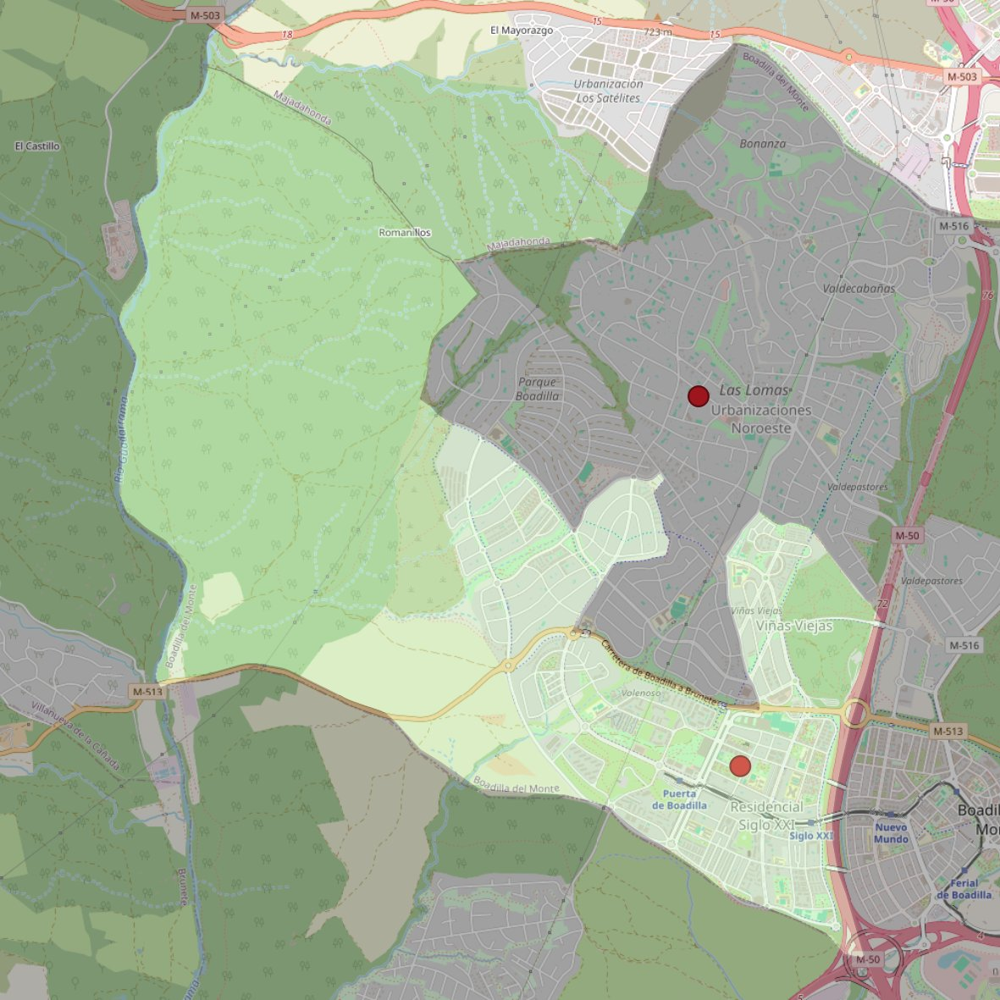

Santo Cristo de la Misericordia

- Arciprestazgo
- Villaviciosa de Odón
- Población
- Boadilla del Monte
- Dirección postal
- c/ Miguel de Unamuno, 10
- Código postal
- 28660
- Extensión
- 15,51 km² (1.551 ha)
- Teléfono
- 916 331 448
- Correo electrónico
- parroquiamisericordia@gmail.com
Límites territoriales según el decreto
“Partiendo de la confluencia de la autopista M-50 con la carretera M-513, arrancan por el eje de la autopista M-50 (en dirección sur); siguen por el eje de la carretera M-511 (en dirección oeste), por los límites de los términos municipales de Boadilla del Monte con Villaviciosa de Odón, Villanueva de la Cañada y Majadahonda (en dirección noroeste, norte y sureste), por el límite de la urbanización Parque de Boadilla, el terreno denominado Carcava, las urbanizaciones El Olivar de Mirabal, Las Lomas y Valdepastores (las zonas comprendidas en esta relación entre Parque de Boadilla y Valdepastores no quedan incluidas en esta parroquia; en dirección sur, noreste y sudeste) y por el eje de la autopista M-50 (en dirección sur) hasta el encuentro con la carretera M-513, punto de partida”. (Decreto de erección del 8-MAR-2001. BO. Abril-2001, pág. 463-464)